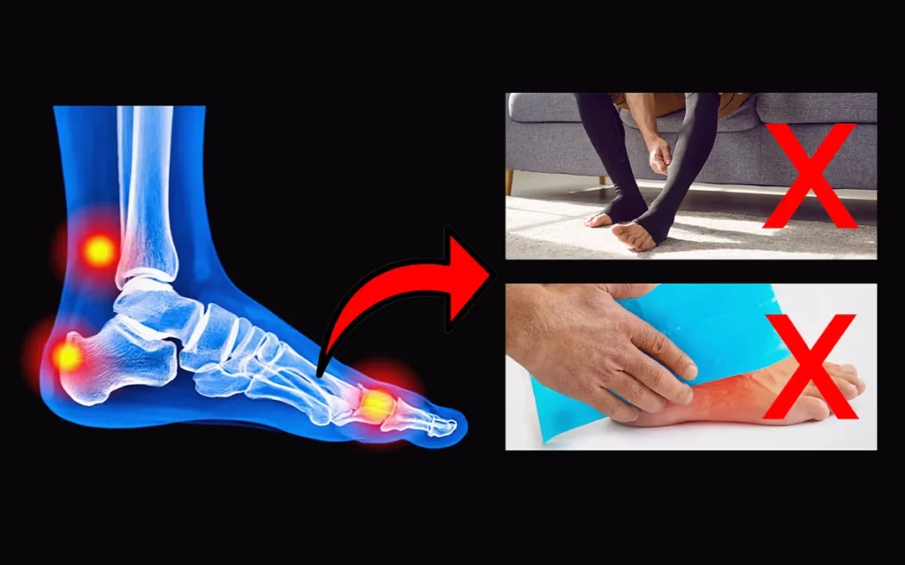
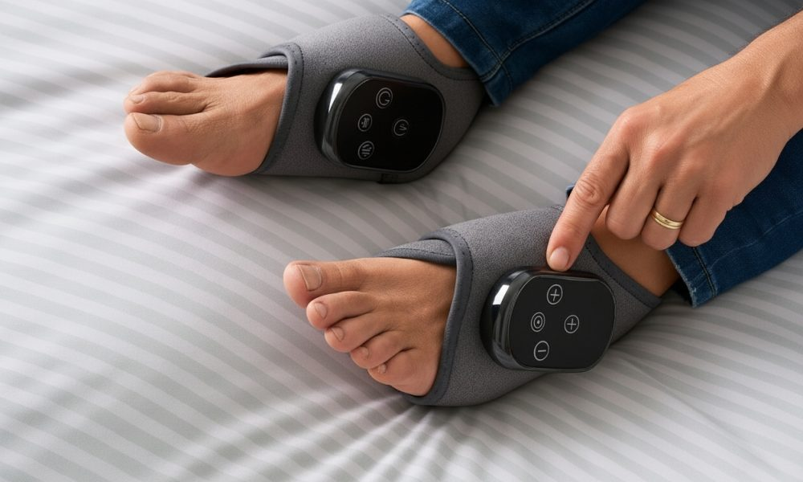
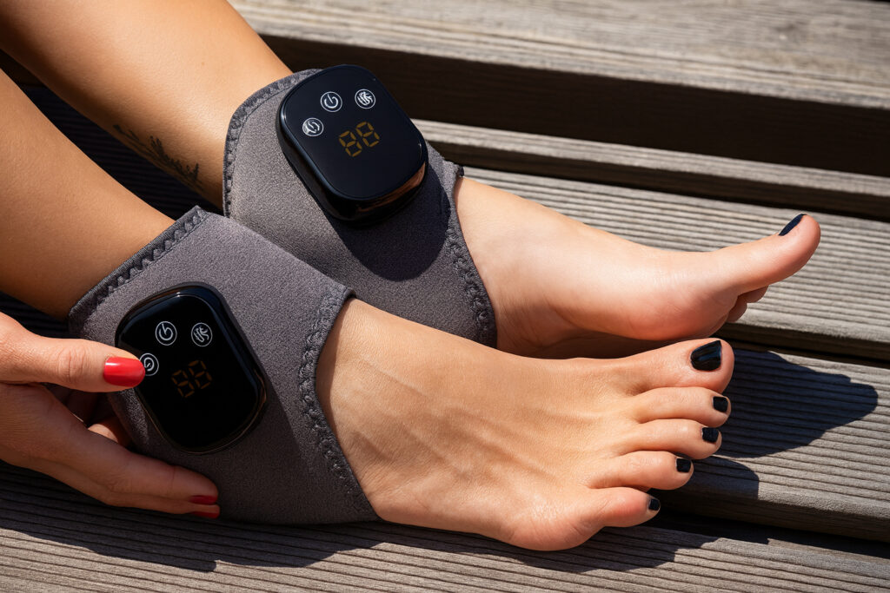
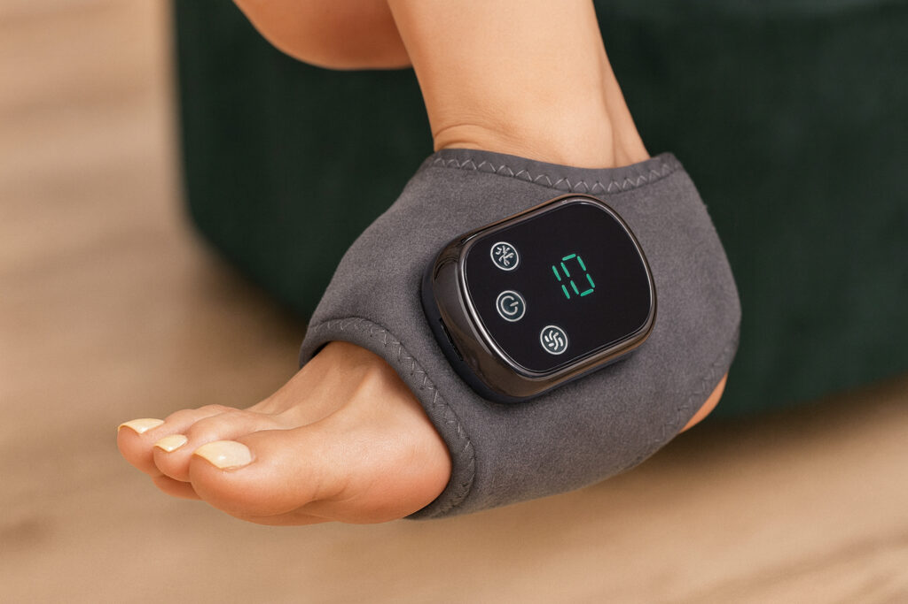

E se il bruciore, i formicolii e l'inquietante intorpidimento dei tuoi piedi non fossero una condanna a vita?
Questo e esattamente cio che pensavo -- fino a quando una scoperta inaspettata non ha cambiato tutto.
Non sono un dottore. Sono solo un uomo di 62 anni che si e rifiutato di arrendersi dopo anni di disagio ai piedi.
Lascia che ti racconti cosa mi e successo -- e come una soluzione sorprendentemente semplice mi ha dato un sollievo che nessun dottore, medicina o rimedio tradizionale era mai riuscito a offrirmi.
Tutto e iniziato cinque anni fa, con un leggero formicolio alle dita dei piedi. All'inizio non ci ho dato peso. Ma col passare dei mesi, si e trasformato in qualcosa di peggio: un bruciore costante e profondo che non se ne andava mai.
Di notte, mi svegliavo con scosse acute nei piedi. Di giorno, camminare anche solo fino alla cassetta della posta era diventata un'impresa. L'intorpidimento peggiorava, e con esso la paura: "Sto perdendo la sensibilita nei piedi?"
Il momento che mi ha cambiato e arrivato una mattina, guardando la partita di baseball di mio nipote. Mi sono alzato per fargli il tifo -- e le mie gambe hanno ceduto. Sono caduto sulla tribuna davanti a tutti. Era umiliante. Ma soprattutto, era terrificante.
Il mio medico mi ha dato la diagnosi: neuropatia periferica, con progressivo deterioramento dei nervi. Il trattamento? Un cocktail di farmaci che mi lasciavano stordito e comunque non fermavano la progressione.
Ho provato di tutto -- ma niente mi ha dato un vero sollievo

Fisioterapia. Integratori per i nervi. Pediluvi. Agopuntura. Scarpe ortopediche. Gel al capsico. Ho persino provato creme costose vendute su internet che promettevano miracoli.
Alcuni davano un sollievo temporaneo, ma il bruciore tornava sempre. E l'intorpidimento? Continuava a peggiorare.
Non volevo arrendermi. Ma la frustrazione stava prendendo il sopravvento.
E stato allora che un vecchio amico -- un esperto di terapie per il dolore che aveva lavorato con pazienti neurologici per 30 anni -- mi ha detto qualcosa che nessun medico mi aveva mai spiegato.
"Il problema non sono solo i tuoi nervi," mi ha detto. "I tuoi nervi sono affamati. Non ricevono abbastanza ossigeno e nutrimento perche la microcircolazione nei tuoi piedi si e deteriorata. Finche non risolvi quello, nessun farmaco al mondo potra davvero aiutarti."
Aveva ragione. E aveva qualcosa da mostrarmi.
Lo strano dispositivo che mi ha dato speranza in 15 minuti
Mi ha parlato di un nuovo dispositivo progettato specificamente per chi soffre di disagio ai nervi periferici. Non era una medicina. Non era un integratore. Era qualcosa di completamente diverso.
Si chiamava EMSense -- e combinava tre tecnologie in un unico trattamento: calore profondo, stimolazione EMS e compressione terapeutica.
"Provalo," mi ha detto. "Solo 15 minuti. Se non senti nulla, non ti chiedo altro."
Quella sera ho avvolto EMSense intorno ai miei piedi per la prima volta. Dopo soli pochi minuti, ho sentito un calore delicato diffondersi dalle piante fino alle dita. Poi e arrivata una leggera pulsazione -- come se qualcosa stesse "risvegliando" i miei piedi dall'interno.
Per la prima volta in anni, i miei piedi non bruciavano.
Mia moglie mi ha guardato e ha detto: "Stai piangendo?" Non me ne ero nemmeno accorto.
Il mio viaggio di 30 giorni dalla disperazione alla liberta
Quella prima notte era solo l'inizio. I risultati che seguirono furono a dir poco trasformativi.
- Settimana 1: Ripresi a dormire tutta la notte. Le sensazioni pungenti che di solito mi svegliavano erano notevolmente diminuite. Mi sentivo piu riposato e meno ansioso di quanto fossi da anni.
- Settimana 2: Il mio equilibrio si sentiva piu stabile. Potevo scendere le scale con una nuova fiducia, senza aggrapparmi disperatamente al corrimano. L'intorpidimento delle dita sembrava ritirarsi.
- Settimana 3: Feci una passeggiata nel quartiere con mia moglie. Una vera passeggiata. Camminammo per 20 minuti e non dovetti fermarmi nemmeno una volta. Lei prese la mia mano e pianse.
- Settimana 4: Giocai con mio nipote sul pavimento. Corsi con lui in giardino. La paura che aveva dominato ogni momento della mia veglia fu sostituita da una sensazione di liberta.
EMSense non ha solo aiutato a calmare i miei piedi. Mi ha restituito la mia mobilita, la mia fiducia, la mia indipendenza e la mia famiglia. Mi ha restituito la mia vita.
Perche EMSense funziona: l'approccio della "Terapia tripla"
Non e magia. E biomeccanica rivoluzionaria, progettata per affrontare una delle principali cause del disagio legato ai nervi: la cattiva circolazione.
EMSense crea un ambiente ideale per supportare il comfort naturale e il recupero del tuo corpo attraverso il suo sistema di terapia 3-in-1:
✔ Terapia del calore lenitivo: Il calore delicato aiuta a dilatare i vasi sanguigni nei piedi, incoraggiando il flusso di sangue ricco di ossigeno verso il tessuto nervoso affaticato.
✔ Massaggio mirato EMS: Una delicata stimolazione elettrica muscolare (EMS) pulsa nei tuoi piedi, stimolando e "risvegliando" terminazioni nervose e muscoli, promuovendo ulteriormente la circolazione nelle aree che ne hanno piu bisogno.
✔ Compressione terapeutica: Il dispositivo applica una pressione delicata e confortevole che aiuta a ridurre il gonfiore e fornisce un supporto a lungo termine per i nervi iperattivi e irritati.
Insieme, queste tre terapie lavorano per sostenere una circolazione sana e alleviare il disagio alla radice. Un approccio semplice ed efficace che puoi usare comodamente dalla tua poltrona preferita.
Non credere solo alle mie parole...
Non sono l'unico. Migliaia di persone trovano finalmente sollievo dal bruciore, dal formicolio e dall'intorpidimento.

"Ero scettico, ma appena ho avvolto questo intorno ai miei piedi ho capito che era diverso da tutto cio che avevo provato prima. Il calore si e diffuso quasi immediatamente nelle mie piante. Poi e arrivato quel massaggio pulsante delicato -- non troppo forte, giusto per ricordare ai miei piedi che erano ancora vivi. E la compressione? E come un abbraccio morbido per i tuoi piedi. Uso EMSense 15 minuti ogni sera prima di andare a letto, e giuro che dormo meglio e mi sveglio con meno di quel dolore pungente ai talloni."
-- Giovanni R. ★★★★★

"La maggior parte dei dispositivi che ho provato sembravano ingombranti o troppo clinici. EMSense e diverso. Non vedo l'ora di usarlo -- soprattutto al mattino presto all'aperto nelle giornate calde. Il calore e le pulsazioni delicate mi aiutano a iniziare la giornata con una sensazione di calma. I miei piedi si sentono meno tesi e segue una tranquillita evidente. L'unico rimpianto e non averlo provato prima."
-- Maria B. ★★★★★

"Adoro il fatto di non dover interrompere la mia giornata per usare EMSense. Lo indosso mentre guardo i miei programmi preferiti e fa il suo lavoro silenziosamente. Il calore e sottile ma rassicurante, e le pulsazioni delicate tengono i miei piedi attivi senza distrarmi. Dopo alcune settimane di uso costante, i miei piedi la sera si sentono meno tesi."
-- Lucia M. ★★★★★
L'offerta che rende facile decidere
Se me lo chiedi: finalmente sentire il terreno sotto i tuoi piedi... camminare senza dolore bruciante... dormire tutta la notte senza scosse nervose o dita intorpidite? E semplicemente inestimabile.
Quindi, se soffri di formicolii, bruciori, intorpidimenti o disagi che rendono ogni passo una sfida -- EMSense vale ogni centesimo.
In questo momento i creatori di EMSense offrono un'esclusiva riduzione del 70 % solo per i lettori di questo articolo -- ma solo fino a esaurimento scorte. Inoltre ricevi:
✔ Spedizione gratuita
✔ 30 giorni di prova senza rischi
✔ Terapia casalinga semplice e senza farmaci
Non aspettare. Se il disagio ai piedi ti ruba energia, fiducia o serenita, questa potrebbe essere la soluzione semplice ed efficace che stavi cercando.